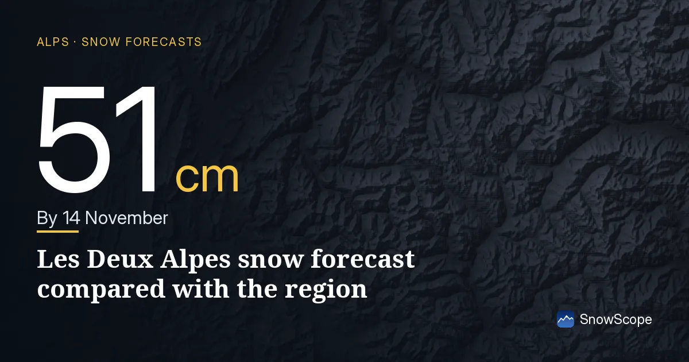

Les Deux Alpes snow forecast compared with the region: 51 cm by 14 November
The snow-covered area has shrunk from 45,820 km² on 9 November to 38,440 km² today, and our forecast gives 46,730 km² on 14 November: part of that snow has already melted away. By 14 November the forecast adds 58 cm at La Grave, 51 cm at Les Deux Alpes and 44 cm at Ponte di Legno to the snowpack. Two kinds of numbers here: model estimates for the upper slopes of each resort, and station measurements that are exact but cover one point on the date shown. Snow in the mountains is water held back for spring: what falls now feeds rivers and reservoirs later.
See the live snow forecast for Les Deux Alpes in the SnowScope appSnow depth, powder alerts and the 3D map, free.
How much snow is lying
The deepest snowpack of this group is at Ponte di Legno, about 62 cm on the upper slopes; next are La Grave 39 cm and Les Deux Alpes 29 cm.
Today 38,440 km² of ground in the Alps is covered by snow, our model says, and 623 of 1,179 resorts have snow on their upper slopes.
| Resort | Snow depth | New snow, 72 h | Coming, next days | Top |
|---|---|---|---|---|
| La Grave | 39 cm | 23 cm | 58 cm | 3,543 m |
| Les Deux Alpes | 29 cm | 21 cm | 51 cm | 3,511 m |
| Ponte di Legno | 62 cm | 3 cm | 44 cm | 2,993 m |
| Alpe d'Huez Grand Domaine | 25 cm | 16 cm | 42 cm | 3,306 m |
| Livigno | 28 cm | 5 cm | 42 cm | 2,791 m |

The snow still to come
Up to 51 cm of new snow is forecast at Les Deux Alpes over the next days.
Forecasts move: the timing is usually more reliable than the totals, so check again two days before you go.
At about 2,397 m, Les Deux Alpes has 0 cm today; a normal 11 November has 18 cm there.
That is more than in 5 of the 46 past winters on this date.
In past winters the best snow at Les Deux Alpes usually came early March / early April.
Day by day at Les Deux Alpes: Wednesday 11 November 5 cm; Thursday 12 November 45 cm; Friday 13 November 5 cm; Saturday 14 November 1 cm.
Height by height at Les Deux Alpes: 1,284 m 0 cm on the ground, 0 cm more in the next 7 days; 2,397 m 0 cm on the ground, 39 cm more in the next 7 days; 3,511 m 48 cm on the ground, 76 cm more in the next 7 days.
The next days in the forecast
More snow, and so more stored water, is on the way: by 14 November our forecast gives 42 cm at Alpe d'Huez Grand Domaine and 42 cm at Livigno.
Where snow stays, where it melts
With the freezing level at 3,030 m to 3,210 m on 12 November, the lower slopes of La Grave may get wet snow or melt, while the top stays wintry.
At Les Deux Alpes the freezing level reaches 2,600 m to 3,020 m on 12 November: lower down the snow may turn wet, higher up it stays cold.
With the freezing level at 2,310 m to 2,770 m on 12 November, the lower slopes of Ponte di Legno may get wet snow or melt, while the top stays wintry.
Height changes everything at La Grave: our model gives 42 cm at the base (3,196 m), 48 cm at mid-mountain (3,369 m) and 48 cm at the top (3,543 m).
Safety and avalanche level
Forecasts a few days ahead can change: look at the map again the day before you travel.
Tips for skiers
- Forecasts a few days ahead can change: look at the map again the day before you travel.
- When the freezing level rises above the resort, part of the snow melts as it falls: expect wet snow and stay near the top.
- Be on the first lift after a snowfall: by midday, sun and skiers have already changed the snow.
- Before you ski off-piste or go touring, read the official avalanche bulletin (links below).
- Get a powder alert in the SnowScope app to know when La Grave gets fresh snow.
About these numbers
Resort snow depths are the deepest snow on the resort's upper slopes from the SnowScope snow model (about 1 km, run of 11 November); they are estimates for an area, not a measurement at one point. Station values are measurements on the date shown. Forecasts can change. Always read the official avalanche bulletin before going off-piste.
Official avalanche bulletins: EAWS (Alps)
Cite this report
For research, teaching or the press: the numbers and charts are free to reuse under CC BY 4.0 with this citation.
SnowScope (2026), Les Deux Alpes snow forecast compared with the region: 51 cm by 14 November, https://snowscope.app/blog/en/2026/11/alps-les-deux-alpes-snow-forecast-11-november-2026.html, accessed 2026-11-11
SnowScope (Atlas Labs). (2026, November 11). Les Deux Alpes snow forecast compared with the region: 51 cm by 14 November. SnowScope snow reports. https://snowscope.app/blog/en/2026/11/alps-les-deux-alpes-snow-forecast-11-november-2026.html
BibTeX
@misc{snowscope2026alpslesdeuxalpessnowfore,
author = {{SnowScope (Atlas Labs)}},
title = {Les Deux Alpes snow forecast compared with the region: 51 cm by 14 November},
year = {2026},
month = nov,
howpublished = {\url{https://snowscope.app/blog/en/2026/11/alps-les-deux-alpes-snow-forecast-11-november-2026.html}},
note = {Published 2026-11-11 18:44 UTC; accessed 2026-11-11}
}· CC BY 4.0 · Methods, data and tools →
Les Deux Alpes: snow and temperature by height, this winter vs last (tools) →
Follow Les Deux Alpes
Free: a message when fresh snow is coming, and the forecast every morning.
More snow reports

Ski Livigno for 51.50 EUR per day before December 18 when the snow at the top reaches 30cm in 100 % of past winters.

Is Alpe d'Huez worth it for December 2026? We check the snow odds, the starting price of 58.00 EUR, and compare it with Les 2 Alpes.

Les 2 Alpes reaches 3511 m for high snow in December 2026, with an adult 6-day pass priced at 266.50 EUR.